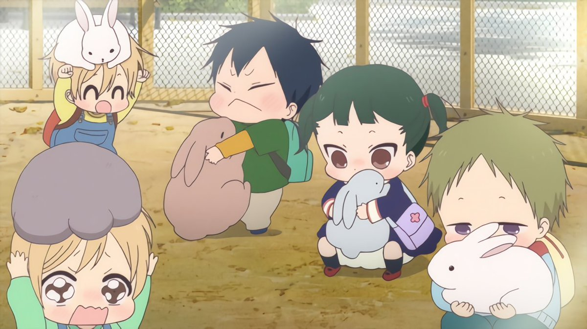

|
|
| Generos | Estrenos | Blog | Contacto | Cuestionario (Trivia) | Ayuda |
♥ Anime Jōhō ♥ |
|
Bienvenido o bienvenida a Anime Jōhō en esta página encontraras información sobre el anime, descripciones, número de temporadas, capitulos, ovas y peliculas. También encontraras informacion adicional, como el autor del anime, encontaras una playlist de los openings que tanto nos gustan en su respectivo anime |
|
¿Que es el anime?Anime, también escrito ánime y animé, en japonés: アニメ abreviatura de animation que es la adaptación japonesa de la palabra «animación». Su uso por parte del público extranjero para referirse a la animación concretamente japonesa, ha terminado por convertirla popularmente en un término que identifica a la animación de procedencia japonesa. En sus inicios, alrededor de 1910, la animación japonesa recibe el nombre desenga eiga (literalmente “películas de líneas dibujadas”), más tarde se conocerá con el término Doga("imágenes en movimiento") y, finalmente, sobre 1960 pasará a llamarse animeeshon. De ahí que se abrevie a «anime». Por otra parte se cree que es una palabra de origen francés. El ánime es un medio de gran expansión en Japón, siendo al mismo tiempo un producto de entretenimiento comercial y cultural, lo que ha ocasionado un fenómeno cultural en masas populares y una forma de arte tecnológico. |
|
|  |
Es potencialmente dirigido a todos los públicos, desde niños, adolescentes, adultos, hasta especializaciones de clasificación esencialmente tomada de la existente para el "manga" (historieta japonesa), con clases base diseñadas para especificaciones socio-demográficos tales como empleados, amas de casa, studiantes, etc. Por lo tanto, pueden hacer frente a los sujetos, temas y géneros tan diversos como elamor, aventura, ciencia ficción, cuentos infantiles, literatura, deportes, horror,fantasía, comedia y muchos otros. El animé se caracteriza por sus personajes estrambóticos de acciones exageradas que generalmente tienen una misión. Los personajes de los animés representan fielmente al género que representan, por ejemplo, un animé romántico sería excesivamente tierno y dulce, mientras que un animé gore tendría un exceso de sangre y violencia. |